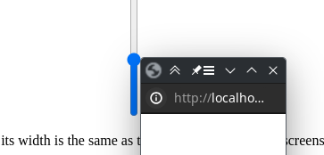
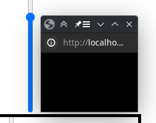

clicking this button will make it take a screenshot after the frame finishes and download it
1.open test window
2.slide this slider so that its height is the same as the title bar of the window, screenshot provided(for higher y res you can do less)
3.slide this slider so that its height is the same as the windows height
4.what x resolution(dont do below 1)
5.how many frames to skip, drawing with windows is slow so frames should be skipped (1 means every frame will be shown)
6.if this is enabled it will skip frames adaptively to keep the same speed as the original video THIS OVERRIEDS NUMBER 5
7.if this is enabled it will show every frame the same ammount of time THIS OVERRIDES NUMBER 6
8.how close a windows size has to be to the part that needs to be colored, for example if the minimum window size is 150px(limited by the browser) and the part it needs to color in is 100px then it will only draw if this is greater than 50
9.slide this slider so that its width is the same as the windows width, this is for number 8
10.start